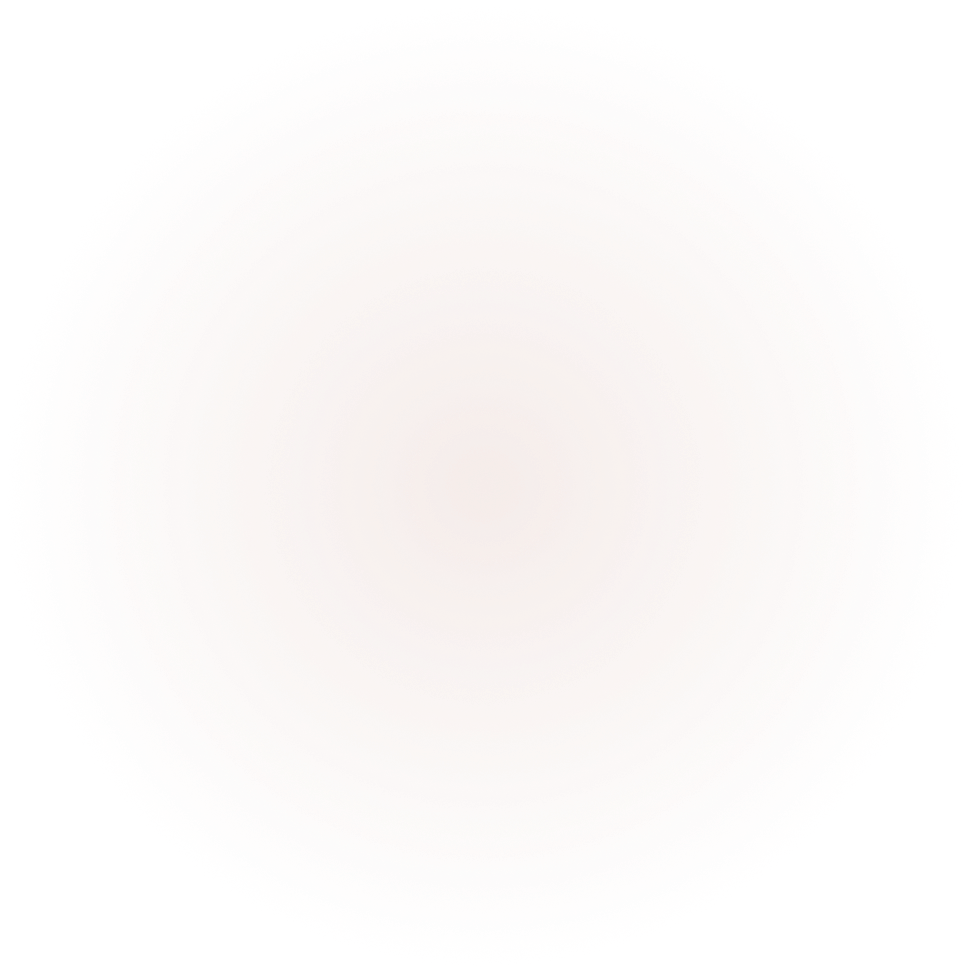
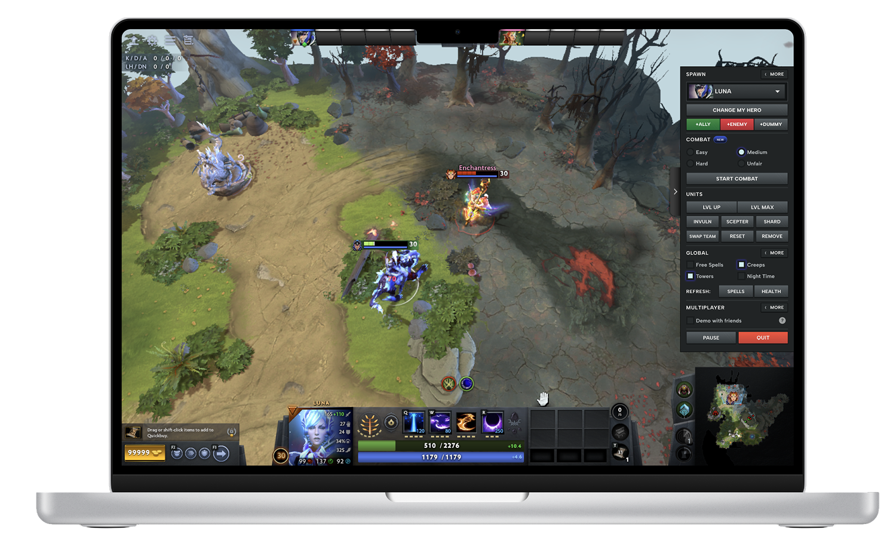
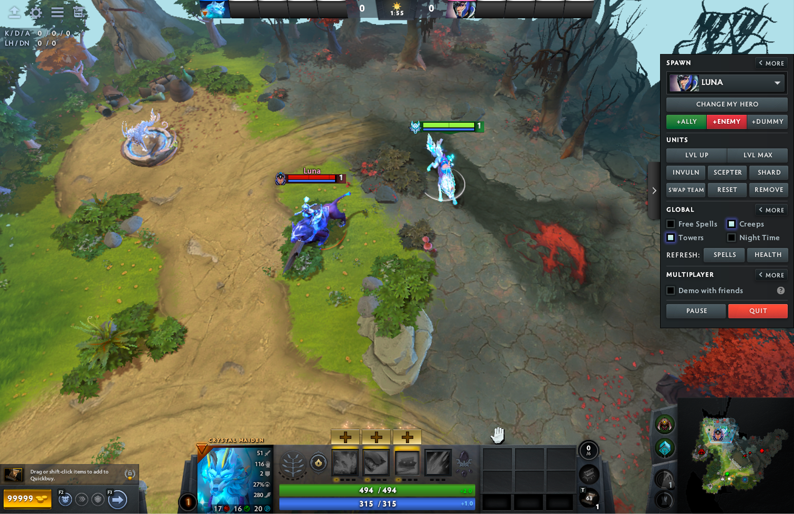
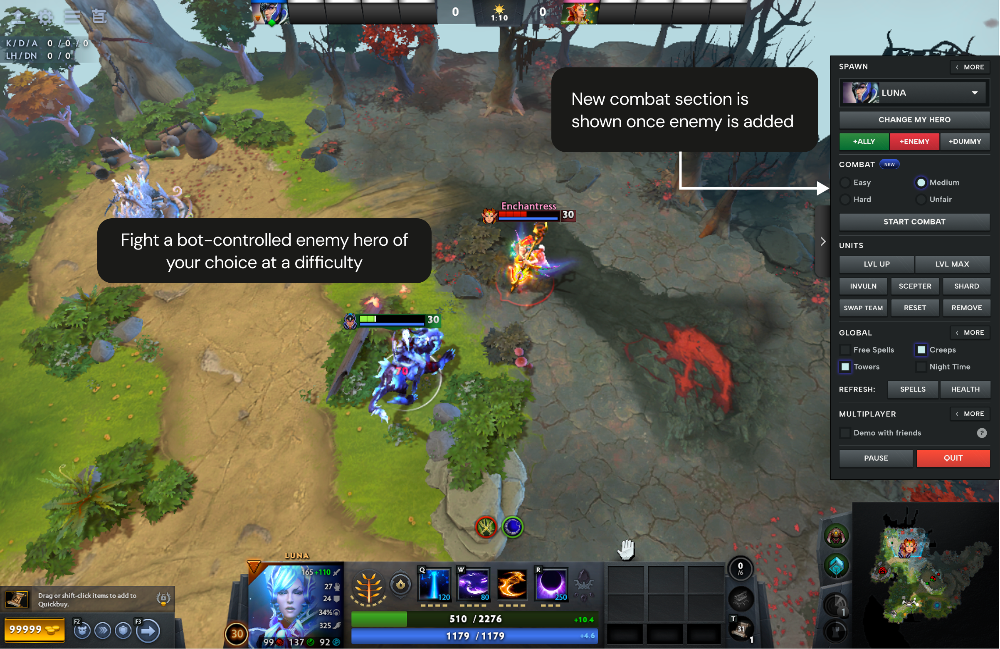
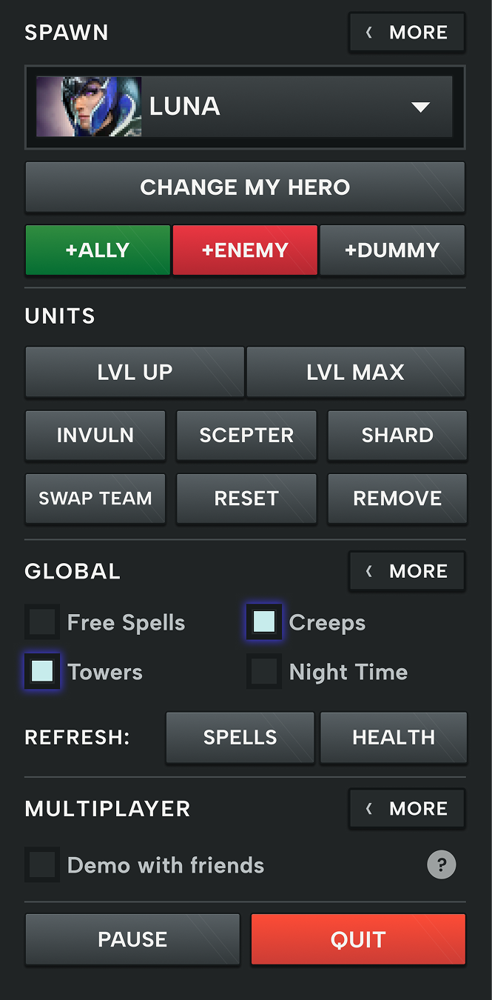
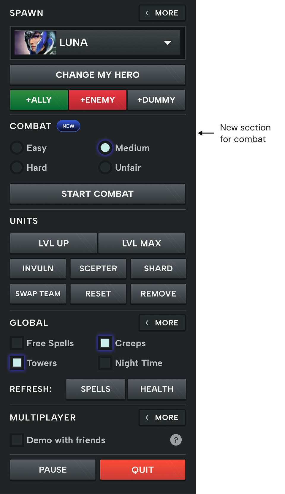
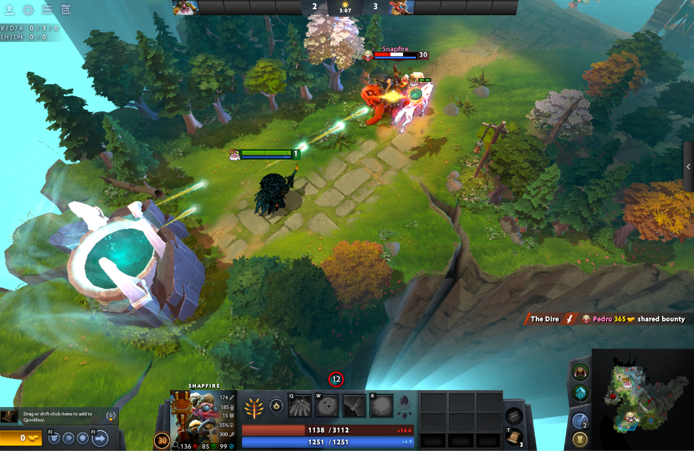
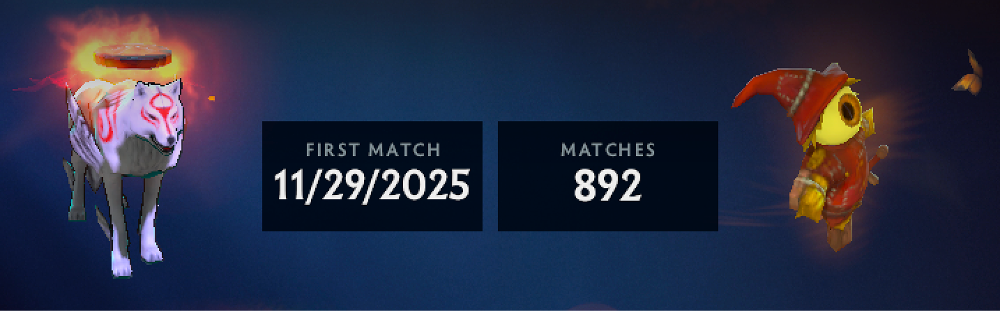

A feature concept for Dota 2 exploring how focused 1v1 bot combat could help players practice fighting specific heroes, without committing to a full game.
Context
I picked up Dota 2 in December 2025, not because I sought it out, but because my friends play it every day and I wanted to be part of that. They've been playing since they were teenagers. I joined matches underprepared, and quickly learned what that costs in Dota 2.
The Problem
Dota's tutorial is genuinely comprehensive, but most new players skip or abandon the tutorial. When you first download the game, you want to play, not study. Both myself and a friend who started Dota 2 recently took the same path independently, confirmed by experienced friends who teach newcomers.
The Opportunity
Demo mode is where most new players naturally land after skipping the tutorial: self-paced, no social pressure, free to test any hero, abilities, and items on a full or smaller map. It's the right place to learn. The one thing missing is an opponent that fights back. Adding that closes the gap between "I know what my hero does" and "I know how to fight with it."

Current Demo mode: The enemy has to be controlled manually, you can't fight and control the opponent at the same time.The Proposed Feature: Combat Training Inside Demo Mode
After learning abilities in Demo mode, new players can now go one step further, fight a bot-controlled enemy hero of their choice at a difficulty they set. No farming, no objectives, no 40-minute commitment. Just the combat practice they need before stepping into a real game.
New to Dota 2 and still finding their footing. Need a low-pressure, self-paced way to build combat confidence before entering real games.
Want to test a new or unfamiliar hero in realistic combat before committing to a ranked game, without the overhead of a full bot match.

Proposed Combat Training: Bot-controlled enemy actively fights back, no friend or manual control needed.Context
Once a user adds an enemy via '+Enemy', a COMBAT section appears in the panel. New players can select a difficulty — Easy, Medium, Hard, or Unfair (the same tiers already used in bot matches), and start a live 1v1 fight. The enemy stops standing still and actively fights back.
Left: Original panel - no combat option regardless of spawned enemies. Right: After '+Enemy' is clicked, a Combat section appears with difficulty checkboxes and a 'Start Combat' button.

Current: No combat option
Proposed: Combat section with difficulties & CTANew players who are already in Demo mode to learn their hero discover Combat Training naturally, at exactly the moment they've added an enemy and want to fight. No separate menu to find, no mode to switch to.
The enemy hero is already selected via '+Enemy'. The only remaining choice is difficulty, keeping setup fast and frictionless for new players who just want to get into a fight.
Easy, Medium, Hard, and Unfair already exist in Play vs Bots, the bot behaviour and difficulty logic are already built. Combat Training plugs into the same system rather than building new bot behaviour from scratch, making it a low-engineering-effort addition.
The COMBAT section only appears after '+Enemy' is clicked. Veterans who use Demo without spawning an enemy continue as normal, nothing in their workflow changes.
Decision 2: Session Start & Respawn
New players need a moment to prepare before combat begins, and a fair reset after dying, not an immediate punish. Combat Training handles both with two existing behaviours: the silhouette mechanic (heroes can't be attacked until they move or attack) and fountain respawn (the same spawn point used in real Dota games, protected by a guardian that attacks approaching enemies).
When START COMBAT is clicked, both heroes begin as silhouettes at their respective fountains. A 3-second countdown gives new players time to buy items, level up, or adjust before combat begins. When either hero dies, they respawn at their fountain as a silhouette, safe from attack until they choose to re-engage. The surviving hero stays active on the map.

Proposed: Heroes respawn at their fountain as a silhouette. The fountain attacks any enemy that comes too close, giving the respawning player a safe window to prepare before re-engaging.Fountain respawn keeps both heroes at a safe distance after a death, no awkward standoffs, no bot camping the respawn point. New players always choose when to re-engage, rather than being immediately attacked the moment they come back.
Both heroes spawn as silhouettes with a 3-second countdown, giving new players time to buy items, set their level, and orient before combat starts. No scrambling to configure mid-fight.
Respawning at the fountain, protected by a guardian that attacks nearby enemies, ensures the surviving hero can't simply stand over the respawn point and attack immediately. Each round starts from a neutral position, the same way a real game does.
The silhouette respawn mechanic already exists and is already understood by players. Reusing it for both the session start and the respawn phase means minimal engineering effort and zero new concepts for players to learn.
Dota 2 is a game I genuinely enjoy, but learning it wasn't easy. I came in as a complete beginner, figured things out the hard way, and found myself wishing the game was more accessible to new players like me. Part of that is selfish: more accessible means more friends willing to try it, and more people to play with.
The learning curve in Dota is steep, and that's what pushed me to think about how my product design background could contribute something useful. Combat Training won't solve the steep learning curve entirely (that's a much bigger problem). But I believe it removes one real barrier: the gap between knowing 'what your hero does' and feeling confident enough to use it in a real fight. Whether you're a new player building up courage before your first ranked game, or an experienced player trying out an unfamiliar hero, having a safe space to practice combat without consequences is something the game is currently missing.

The inputs are gathered from:
'I feel more prepared to run or fight after training with a friend inside Demo mode, but I can't always ask them.'
- Personal experience, the direct origin of this feature concept
'I completed the tutorial and went into a real game. I get obliterated in seconds whenever an enemy sees me. I don't know what to do and I'm thinking of quitting.'
- Steam Community forum, new player, February 2024
1. 1v1 bot practice doesn't replicate real game dynamics
A real Dota game involves 5 players per team, coordinated team fights, and macro strategy. Combat Training improves individual hero mechanics and combat confidence, but can't replicate team collaboration, communication, or the unpredictability of real opponents. That gap remains.
2. Design without official assets
Dota 2's UI assets aren't publicly available, so the mockups in this case study are hand-crafted to match the visual language as closely as possible, not pixel-perfect reproductions. The design intent is accurate; the fidelity is approximated.